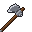
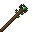
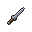

Weapons
Every weapon type, which class uses it, how weapon damage scales with level and rarity, and the full list of rolled weapon bases.
Weapon types and classes
Each class casts its abilities through its own weapon types. Anyone can swing any weapon, but only the right class can cast with it.
| Type | Class | Notes |
|---|---|---|
| Sword | Warrior | Balanced damage and speed |
| Axe | Warrior | About 30% more per hit than a sword, slower |
| Mace | Warrior | About 20% more per hit than a sword, slower |
| Shield | Warrior | Off hand. Gives armour instead of damage |
| Dagger | Rogue | About 25% less per hit than a sword, much faster |
| Bow | Archer | No melee damage. Its Draw Power adds % arrow damage |
| Staff | Mage | Kept weak in melee on purpose. A Mage's damage is in the spells |
| Mage Blade | Mage | A light sword that casts like a staff. Hits for about 75% of a sword |
| Standard | Herald | The Herald's banner pole. Low melee, casts the Herald's hymns |
Weapons and shields always belong to their own type's class (a bow is always an Archer's), so they carry no "Made for" line. Only armour is rolled for a class.




How weapon damage works
Damage, attack speed and Draw Power are rolled when the weapon is made. They come from:
- Power = item level + rarity number (Common 1 … God's Tool 7).
- The type's base and growth per power point.
- A quality roll inside the rarity's window (Common 85-100% up to God's Tool 115-130%). See rarity.
- The base's own damage %. Heavy bases hit harder and swing slower, and light ones the other way round.
| Type | Starts at | Grows per power point | Attack speed |
|---|---|---|---|
| Sword | 5 | +0.20 | about 1.6 |
| Axe | 6.5 | +0.26 | about 0.9 |
| Mace | 6 | +0.24 | about 0.9 |
| Dagger | 3.8 | +0.13 | about 2.4 |
| Mage Blade | 4 | +0.15 | about 1.7 |
| Staff | 2 | +0.03 | fist speed |
| Standard | 3 | +0.06 | fist speed |
| Bow | - | +2% arrow damage (Draw Power) | - |
Attack speed only moves a little: the type's speed ±5% at random, plus a tiny amount per power point. Your Ferocity is the real attack-speed stat.
A plain sword's damage (low-high of the quality window, before the base's own %):
| Item level | Common | Uncommon | Rare | Mythic | Legendary | Extraordinary | God's Tool |
|---|---|---|---|---|---|---|---|
| 1 | 4.6-5.4 | 5.0-5.9 | 5.5-6.4 | 6.0-6.9 | 6.5-7.4 | 7.0-8.0 | 7.6-8.6 |
| 10 | 6.1-7.2 | 6.7-7.8 | 7.2-8.4 | 7.8-9.0 | 8.4-9.6 | 9.0-10.2 | 9.7-10.9 |
| 25 | 8.7-10.2 | 9.4-10.9 | 10.1-11.7 | 10.8-12.4 | 11.6-13.2 | 12.3-14.0 | 13.1-14.8 |
| 50 | 12.9-15.2 | 13.9-16.2 | 14.8-17.2 | 15.8-18.2 | 16.8-19.2 | 17.8-20.3 | 18.9-21.3 |
Your stats, perks and tree add to this. Might, for example, adds melee damage on top. See stats.
Below the weapon's item level it does nothing. No damage and no casting until your character level catches up (see gear).
Rolled weapon bases
Each base has its own name, damage % and speed %, and a level band: it only drops once your character reaches that level. Later bases are slightly better at the same item level, about 1% per 5 band levels. Normal, Magic and Rare versions each have their own look, and the Rare look of many bases is animated.
The original bases (Warblade, Cleaver, Templar Maul, Kite Shield, Shiv, Hunter's Bow, Arcane Staff, Assassin's Dagger, Mage Blade, Herald's Standard) still drop at every level.
| Class | Base | Type | Band | Damage % | Speed % |
|---|---|---|---|---|---|
| Warrior | Levy Blade | Sword | 1 | 96 | 104 |
| Warrior | Bog Chopper | Axe | 4 | 106 | 95 |
| Warrior | Bell Hammer | Mace | 8 | 104 | 98 |
| Warrior | Exile Greatsword | Sword | 12 | 124 | 83 |
| Warrior | Tower Shield | Shield | 12 | 112 (armour) | - |
| Warrior | Dane Axe | Axe | 16 | 118 | 88 |
| Warrior | Ram's Head | Mace | 20 | 112 | 93 |
| Warrior | Oathblade | Sword | 25 | 103 | 102 |
| Warrior | Headsman's Axe | Axe | 30 | 128 | 83 |
| Warrior | Grave Mattock | Mace | 35 | 130 | 82 |
| Warrior | Barrow Door | Shield | 35 | 120 (armour) | - |
| Warrior | Emberwrought Blade | Sword | 40 | 110 | 98 |
| Mage | Hedge Staff | Staff | 1 | 100 | - |
| Mage | Mirelight Staff | Staff | 4 | 101 | - |
| Mage | Inkblade | Mage Blade | 8 | 98 | 104 |
| Mage | Bone Wand | Staff | 12 | 102 | - |
| Mage | Sigil Sabre | Mage Blade | 16 | 106 | 98 |
| Mage | Seer's Crook | Staff | 20 | 104 | - |
| Mage | Tower Sabre | Mage Blade | 25 | 100 | 105 |
| Mage | Astral Spire | Staff | 30 | 106 | - |
| Mage | Quillsword | Mage Blade | 35 | 97 | 110 |
| Mage | Ember Sceptre | Staff | 40 | 108 | - |
| Rogue | Gutter Knife | Dagger | 1 | 95 | 105 |
| Rogue | Reed Knife | Dagger | 4 | 100 | 101 |
| Rogue | Cinquedea | Dagger | 8 | 112 | 91 |
| Rogue | Bodkin | Dagger | 12 | 92 | 112 |
| Rogue | Fang Knife | Dagger | 16 | 104 | 100 |
| Rogue | Ledger Knife | Dagger | 20 | 99 | 106 |
| Rogue | Whisper Blade | Dagger | 25 | 108 | 98 |
| Rogue | Duskfang | Dagger | 30 | 95 | 112 |
| Rogue | Twin Fangs | Dagger | 35 | 116 | 92 |
| Rogue | Throatcutter | Dagger | 40 | 112 | 96 |
| Archer | Sapling Bow | Bow | 1 | 100 | - |
| Archer | Reed Bow | Bow | 4 | 101 | - |
| Archer | Horn Bow | Bow | 8 | 102 | - |
| Archer | Composite Bow | Bow | 12 | 102 | - |
| Archer | Heron Bow | Bow | 16 | 103 | - |
| Archer | Siege Bow | Bow | 20 | 104 | - |
| Archer | Moonbow | Bow | 25 | 105 | - |
| Archer | Thornbow | Bow | 30 | 106 | - |
| Archer | Stormstring | Bow | 35 | 107 | - |
| Archer | Elder Yew | Bow | 40 | 108 | - |
| Herald | Camp Banner | Standard | 1 | 100 | - |
| Herald | Road Pennant | Standard | 4 | 101 | - |
| Herald | Bell Pole | Standard | 8 | 102 | - |
| Herald | Choir Standard | Standard | 12 | 102 | - |
| Herald | Lantern Pole | Standard | 16 | 103 | - |
| Herald | Vesper Banner | Standard | 20 | 104 | - |
| Herald | Wayfarer's Ensign | Standard | 25 | 105 | - |
| Herald | Clarion Staff | Standard | 30 | 106 | - |
| Herald | Sunstandard | Standard | 35 | 107 | - |
| Herald | Exile's Colours | Standard | 40 | 108 | - |
For bows, "damage %" is the base's Draw Power %. For shields it is the base's armour %.
Named weapons
Beyond rolled bases there are hand-made weapons with fixed stats:
- Uniques that drop from monsters: Emberbrand (active Ember Burst: a ring of fire burns enemies within 4 blocks), Warcaller (War Cry: you and nearby allies gain Strength and Speed for 8s), Dawnhammer (Holy Smite: light strikes the first enemy you look at, up to 12 blocks), Ghostfang (Phantom Lunge: lunge forward and thrust a ghost blade about 6 blocks), Bulwark of Dawn (a shield) and The Rubber Chicken. Right-click to use an item's active skill.
- Signature weapons drop from bosses. Each has its own ability, which takes your first ability key while you hold the weapon:
| Weapon | Type | Signature |
|---|---|---|
| Clanbreaker | Axe | A shockwave throws enemies within 5 blocks into the air and sunders their armour (-6 armour for 6s). |
| Mycelial Greatbow | Bow | Charge for 1.5s, then loose 5 arrows at once, each dealing 50% of your arrow damage. |
| Broodfang | Dagger | Slash the enemy in front of you and mark it with poison for 8s. The mark pulses, poisoning enemies within 3 blocks. |
| Necrostaff | Staff | Raise 2 undead servants that fight for you for 20s (up to 4 at once). |
| Defiling Staff | Staff | Plant a corpse mine where you look (up to 3). With 3 planted, right-click detonates them all. |
| Blood Staff | Staff | For 2s, drain every hostile within 8 blocks. Each pulse that hits heals you. |
- Legendary weapons: 25 class-locked weapons with big fixed stats.
- Extraordinary and God's Tool weapons: 15 class-locked weapons, each with its own passive.
Named weapons also get an item level when they drop, and their numbers follow that level like everything else.
Skill sockets
A weapon with a skill socket can hold a skill gem, which then becomes your first ability while you hold it. Extraordinary and God's Tool weapons always have one. On other pieces you can add one at the forge with a Skill Socket Stone.